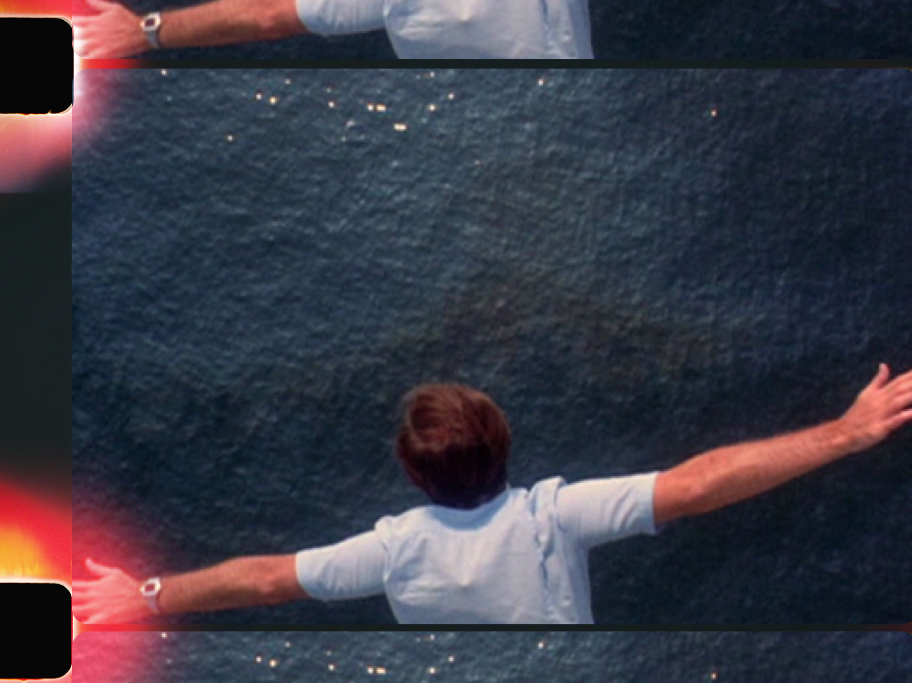

Chapter One
“It’s strange how you remember certain things and forget others. If, all of a sudden, we remembered everything that we have forgotten and forgot everything that we remember, we would be completely different people.” — Michelangelo Antonioni
On June 8, 2018, after hours of driving under the sweltering Andalusian sky, leaving behind the haunting grandeur of Granada, the stubbornly snow-capped Sierra Nevada mountains framing the horizon, I had just reached the outskirts of Almeria when the news of Anthony Bourdain’s death came on the radio. The Mediterranean Sea had just come into view, out beyond the strange pale expanse of the “Mar de plastico” (Sea of Plastic), 20,000 distant greenhouses spread out over the desert coastline like the shattered pieces of a broken mirror, shielding millions of tons of citrus groves, nuts, and vegetables.
When they mentioned Bourdain was found inside his hotel room in Kaysersberg, France, I turned off the radio, then pulled over at the next gas station to buy a pack of cigarettes. After three months on the wagon––my longest stretch in years––my nerves needed a crutch for the remaining fifty-mile drive to my destination in Vera, Spain.
I remembered the former chain-smoking Bourdain had quit in 2007, after the birth of his daughter. “I mean, I’ve had more time on this Earth than I probably deserve,” he confessed in an interview about the subject. “But now I feel that I owe this child who loves me to at least try to live a little longer, you know?” Seven months before his suicide, while on camera for Parts Unknown in the south of Italy, he spontaneously lit a cigarette after a satisfying meal. Bourdain offered the moment to his audience almost coyly, but after holding the first puff of smoke deep in his lungs, his eyes hidden behind sunglasses, for an instant I could have sworn Bourdain got emotional. Abruptly, the camera cut away to a child’s hands with interwoven fingers coming apart against the sky, followed by a slow zoom toward the upturned face of a wooden crucified Jesus statue. Given his explicit reason for quitting, the imagery hardly seemed subtle. Over the years, in interviews, his own writing, and on camera, Bourdain hadn’t been shy about referring to or joking about his own suicide—nineteen times, specifically by hanging, according to the July 8, 2018 article “Anthony Bourdain’s Long-Burning Suicidal Wick” by John E. Richters. I was 11 the first time suicide crossed my mind. Once you’ve visited the idea, I’m not sure you can ever remove the breadcrumbs leading back to its doorstep.
The shock of Bourdain’s death held an eerie symmetry: I was near the end of a Quixotic (the last of the giant windmills defending the horizon was only an hour behind me), 4,000-mile pilgrimage to the real location of the fictional Hotel de la Gloria, where, 45 years earlier in 1973, the filmmaker Michelangelo Antonioni had staged the murder of a journalist, documentary filmmaker, and author named David Locke, gunned down in his room at the age of 37 in a case of mistaken identity. Compounding the central mystery of Antonioni’s metaphysical detective story and fatalistic fairytale The Passenger, Locke, the miscast hero of his own story, had secretly committed a form of suicide only a week inside a different yet similarly lonely hotel room.